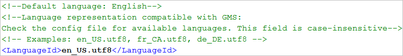

Configure Journaling Language Settings
You can specify the language in which you want to print the localized equivalent text defined in the textgroups by entering the language id in the <LanguageId> tag. For example, if you want the text to print in French, complete the following step:
- In the <PageSetp> section of the template file, navigate to the <LanguageId> tag of the template file and enter fr_CA.utf8 within the opening and closing tags.
